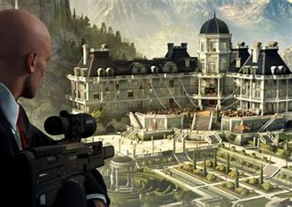

Hitman 3 es la última entrega de la famosa saga de videojuegos que sigue las aventuras del Agente 47, un asesino profesional que enfrenta misiones peligrosas en todo el mundo. Esta entrega finaliza la trama que comenzó en Hitman (2016) y continuó con Hitman 2 (2018), llevando a los jugadores a nuevos lugares exóticos y con un sinfín de nuevas oportunidades para ejecutar asesinatos de manera sigilosa.
En este juego, el Agente 47 debe enfrentarse a una serie de enemigos poderosos mientras desmantela una organización secreta. Cada misión es un rompecabezas que debes resolver con astucia, sigilo y precisión. El mundo en el que el Agente 47 se mueve es grande, abierto y lleno de oportunidades, lo que hace que cada misión sea única.
A lo largo del juego, el jugador puede elegir entre diversas rutas para completar sus objetivos, desde eliminar a los enemigos de manera silenciosa hasta provocar el caos. La gran jugabilidad y la libertad de acción son algunos de los aspectos más destacados de la saga, lo que permite que cada partida sea diferente.
Uno de los aspectos más destacados de Hitman 3 es su impresionante diseño de niveles. Cada escenario está diseñado meticulosamente para ofrecer múltiples caminos y métodos para completar las misiones. Desde un elegante club en Dubai hasta una mansión en las colinas de Inglaterra, cada lugar está lleno de detalles que hacen que el jugador se sienta como si estuviera realmente allí.
Además de las misiones principales, Hitman 3 incluye una serie de desafíos y objetivos secundarios que permiten a los jugadores explorar aún más los mapas. Estos desafíos incluyen desde eliminar a objetivos con métodos específicos hasta encontrar objetos ocultos y completar misiones secundarias. Todo esto enriquece la experiencia de juego y la hace más inmersiva.
Hitman 3 no solo es un juego de asesinatos, también está lleno de curiosidades y detalles que lo hacen aún más interesante. Aquí algunas de las más destacadas:

Uno de los mayores atractivos de Hitman 3 es la posibilidad de completar las misiones de diferentes maneras. Desde asesinatos rápidos y silenciosos hasta escenas más elaboradas en las que el jugador puede manipular el entorno para causar la muerte de los objetivos de manera inesperada. La libertad de acción en Hitman 3 es uno de sus puntos más fuertes, y la posibilidad de hacer diferentes elecciones en cada misión mantiene el juego fresco y atractivo para los jugadores.
Además, el juego cuenta con una impresionante banda sonora que se adapta perfectamente a la atmósfera de cada misión, aumentando la tensión o aliviando el suspenso según sea necesario. Los efectos de sonido también son de alta calidad, lo que contribuye a la inmersión total en la experiencia.
Los fans de la saga Hitman han elogiado mucho la forma en que Hitman 3 cierra la historia del Agente 47. A lo largo del juego, se revelan secretos del pasado del protagonista y se exploran aspectos más humanos del personaje, algo que en las entregas anteriores se mantenía en un segundo plano. Esto añade una capa adicional de profundidad a la historia y hace que los jugadores se sientan más conectados con el personaje.
En conclusión, Hitman 3 es una de las mejores entregas de la saga. Con sus impresionantes niveles, la libertad de acción, los detalles de diseño y las sorpresas que ofrece, el juego es una experiencia inolvidable para los fanáticos de los videojuegos de sigilo y acción. Si eres un amante de los juegos de acción, no puedes perderte este título que cierra la trilogía de forma espectacular.